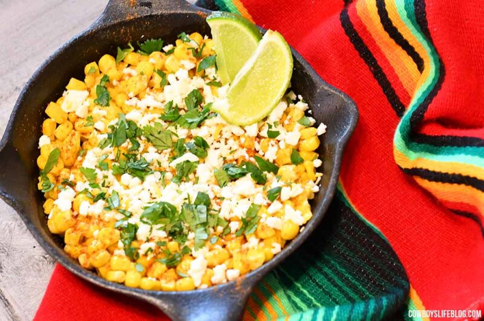

Elote - Mexican Street Corn

Description
This Elote, AKA Mexican Street Corn, recipe is the perfect side dish. It's the perfect combination of sweet, savory and spicy all at once. It is the perfect side dish to go with any Mexican-inspired meal.
Ingredients
- 4 cups corn
- 2 tbsp mayonnaise
- 1 tsp chili powder
- 1 tsp cayenne pepper
- 1/2 cup cilantro, minced
- 2/3 cup cotija cheese
- 2 tbsp lime juice
- 1 tbsp butter